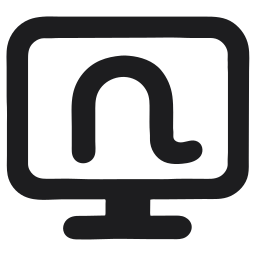
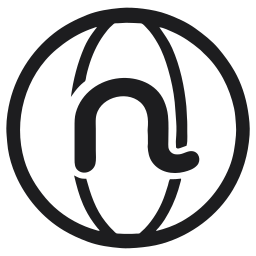
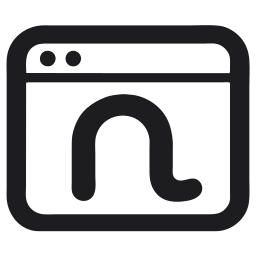
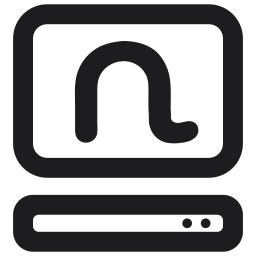
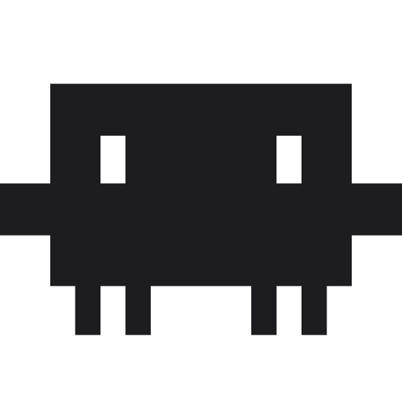
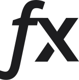
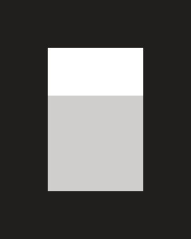
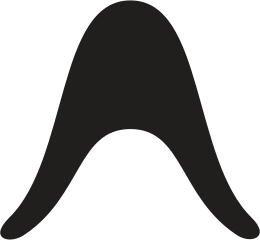
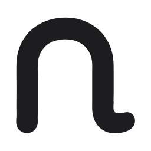

Personal AI agents that get things done on your Mac. Add a Hub to share subscriptions and local models with your household or team.
Free and open source.


Agents with a job
Each agent has a name, a backstory that sets its role, and its own workspace. It remembers the work you've done together.
Better together
Put several agents in a group with a shared goal. They read each other's messages and split the work between them.
Yours to keep, and to share
Agents run on your own devices, on the AI accounts you already have. Share them with family and friends through your own Hub.
One conversation, several agents.
Start a group, add the agents you need and give them a goal. They work in the same thread, and you step in whenever you like.

Noodle Mobile
Your agents, in your pocket.
Pair your iPhone with your Mac or a Hub and talk to your agents anywhere. Start bots, give them tools and play the games they build.



Noodle Computer
A computer for every agent.
Give an agent its own desktop that runs privately on your Mac. It can open documents, work with files and install what it needs, and everything is still there tomorrow. You can open the same desktop at any time.


Noodle Browser
Signed in, so they don't have to ask.
Create a browser, sign in to the sites you use and hand it to an agent. It works in those pages in the background and sends what it finds back to your chat. Pause it whenever you want to take over.


Noodle Applet
Describe it. Your agents build it.
Scientific tools, business dashboards, complete websites: whatever software you need, your agents build it. Applet opens it in its own window straight from the conversation, and it remembers its data between uses.



Noodle Hub
Share your AI with the people you choose.
Run the Hub on an always-on Mac and invite family or friends. Their bots use the subscriptions you lend them without ever holding your sign-ins.

Bring the AI you already use.
Noodle doesn't sell you a model. Connect the accounts you already pay for, or run a free model on your Mac, and mix them in the same group.
- OpenAI Codex

Claude Code- Grok Build
- Muse Code

FX
OpenCode
Antigravity- MonoCode
- Apple Intelligence
- Local models

Private by default.
Every agent starts restricted. You decide which folders each one can see. Your conversations and files are stored on your Mac, and your voice is transcribed on it.
Your files, your call
Each agent works in its own folder until you share more.
On-device voice
Dictation and transcription happen entirely on your Mac.
Open source
Every line of code is public under the Apache 2.0 licence.
No new account
Noodle uses the AI accounts you already have. No sign-up.
Download Noodle.
Start with Noodle, or get all five Mac apps at once with the Suite. Noodle Mobile is in beta on TestFlight. Everything is free.

NoodlePersonal AI agents that get things done.Download Noodle ComputerPrivate computers for you and your agents.Download Noodle BrowserSigned-in browsers you hand to your agents.Download Noodle AppletRuns the tools and apps your agents build.Download Noodle HubShare your AI accounts with people you invite.Download Noodle MobileYour agents on iPhone and iPad.Join the betaAll five apps in one installer.